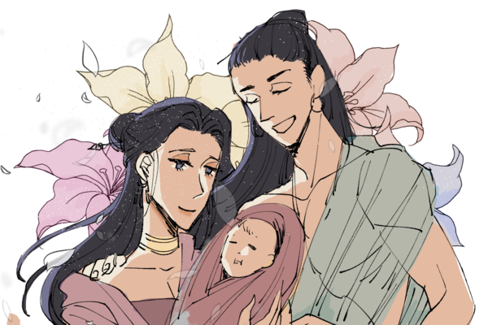
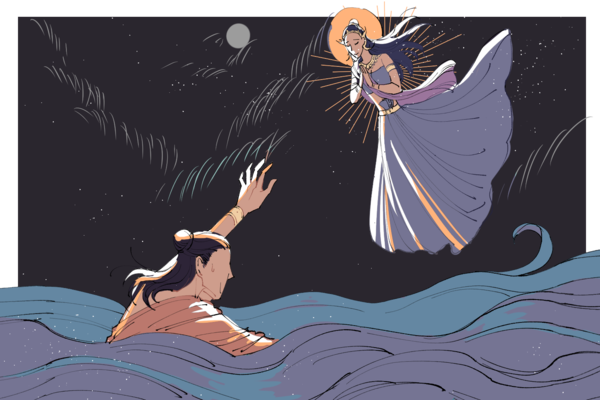

เนื้อเรื่อง
พระมหาชนก
พระมหากษัตริย์ผู้ครองราชย์นครมิถิลาเมืองหลวงแห่งแคว้นวิเทหะ ทรงมีพระราชโอรสสองพระองค์ คือ พระอริฏฐชนกและพระโปลชนก หลังจากพระราชบิดาสวรรคต พระอริฏฐชนกผู้เป็นพระมหาอุปราชก็เสด็จขึ้นครองราชย์ต่อมาโดยทรงแต่งตั้งพระโปลชนกผู้เป็นน้องชายเป็นพระมหาอุปราช
ในเวลาต่อได้มีเหล่าอำมาตย์ผู้ทุจริตบางคนออกอุบายให้พระอริฏฐชนกเกิดความระแวงน้องชายตนเอง โดยพากันเพ็ดทูลว่าพระโปลชนกกำลังวางแผนคิดการประทุษร้ายต่ออาณาจักร พระราชาทรงหลงเชื่ออำมาตย์เหล่านั้น จึงทรงให้ราชมัลจับกุมพระโปลชนกไปขังไว้ทว่าด้วยบุญบารมีของพระโปลชนก พระองค์จึงสามารถหลบออกจากที่คุมขังและเสด็จหนีไปยังชายแดนได้

ครั้นเมื่อไปถึงก็มีบรรดาราษฏรผู้ที่จงรักภักดีต่อพระองค์พากันมาเข้าร่วมเป็นพวกด้วยมากมายและเมื่อถึงกาลที่เอื้ออำนวย พระโปลชนกก็ทรงตัดสินพระทัยยกกองทัพไปยังนครมิถิลา
ครั้นเมื่อทัพของพระองค์ไปถึงบรรดาทหารรักษาเมืองจำนวนมากได้พากันแปรภักดิ์มาเข้ากับพระโปลชนกเนื่องจากเห็นใจที่พระโปลชนกถูกจับไปขังไว้อย่างไม่เป็นธรรม
เมื่อพระพระอริฏฐชนกทรงทราบว่าพระโปลชนกยกทัพมาชิงราชสมบัติและได้มีเหล่าไพร่พลจำนวนมากแปรภักดิ์ พระองค์ตรัสสั่งพระมเหสีซึ่งกำลังทรงครรภ์แก่ให้ทรงหลบหนีเอาตัวรอด ส่วนพระองค์เองทรงยกทัพออกทำสงครามกับพระโปลชนกจนสิ้นพระชนม์ในสนามรบ เมื่อนั้นพระโปลชนกจึงทรงขึ้นเป็นกษัตริย์ครองนครมิถิลาสืบต่อมา

ฝ่ายพระมเหสีของพระพระอริฏฐชนกได้เสด็จหนีไปยังเมืองกาลจัมปากะ ระหว่างทางพระอินทร์เสด็จลงมาช่วย โดยทรงแปลงกายเป็นชายชราขับเกวียนพาพระนางเสด็จไปถึงและให้พระนางนั่งพักอยู่ในศาลาแห่งหนึ่งภายในเมือง บังเอิญพราหมณ์ทิศาปราโมกข์เดินผ่านมาก็เกิดความเอ็นดูสงสาร จึงรับพระนางไปอยู่ด้วยและอุปการะเลี้ยงดูดุจเป็นน้องสาว ไม่นานนักพระมเหสีของพระเจ้าอริฏฐชนกก็ประสูติพระโอรส ทรงตั้งพระนามว่า มหาชนกกุมาร ตามพระนามของพระอัยกา

วันหนึ่ง มหาชนกกุมารได้ชกต่อยกับเพื่อนหลังจากล้อเลียนว่าเป็นลูกไม่มีพ่อ มหาชนกกุมารพยายามถามความจริงจากพระมารดา พระมารดาจึงตรัสเล่าเรื่องทั้งหมดให้ทราบ พระองค์จึงตั้งพระทัยว่าเมื่อเติบใหญ่ก็จะเสด็จไปเอาราชสมบัติเมืองมิถิลากลับคืนมา
ครั้นเมื่อพระมหาชนกกุมารเติบใหญ่ พระองค์ก็ตรัสแก่พระมารดาว่าจะไปล่องเรือสู่ดินแดนสุวรรณภูมิเพื่อทำการค้าสะสมทุนรอนและกำลังคนเพื่อชิงเอาราชสมบัตินครมิถิลากลับคืน พระมารดาจึงทรงนำเอาทรัพย์สินมีค่ามาจากมิถิลา ๓ สิ่ง คือ แก้วมณี แก้วมุกดาและแก้ววิเชียร เพื่อเป็นทุนล่องเรือไปค้าขายที่สุวรรณภูมิ
ในระหว่างทางเกิดพายุใหญ่โหมกระหน่ำอย่างรุนแรงจนเรือจะล่ม บรรดาลูกเรือต่างหวาดกลัวและร้องคร่ำครวญหนีตายจนเกิดความโกลาหล
ฝ่ายมหาชนกกุมารนั้น เมื่อทรงทราบว่าเรือจะจมแน่แล้วก็เสวยอาหารจนอิ่มหนำ จากนั้นทรงนำผ้ามาชุบน้ำมันจนชุ่มแล้วนุ่งผ้านั้นอย่างแน่นหนา ครั้นเมื่อเรือจมลงเหล่าพ่อค้าและกลาสีเรือทั้งปวงก็จมน้ำกลายเป็นอาหารของปลาและเต่า
ส่วนพระมหาชนกทรงแหวกว่ายอยู่ในทะเลถึง ๗ วัน นางมณีเมขลา เทพธิดาผู้รักษามหาสมุทร เห็นพระมหาชนกว่ายน้ำอยู่เช่นนั้น จึงสนทนาแลกเปลี่ยนกันจนนางมณีเมขลาเข้าใจในปรัชญาของการบำเพ็ญวิริยบารมี นางมณีเมขลาจึงช่วยอุ้มพามหาชนกกุมาร ไปจนถึงฝั่งเมืองมิถิลา

ยามนั้นที่นครมิถิลา ฝ่ายพระเจ้าโปลชนกทรงประชวรหนัก พระองค์ไม่มีพระโอรสมีแต่พระธิดาพระนามว่า สิวลี พระโปลชนกทรงรู้ว่าพระองค์ใกล้สิ้นพระชนม์แล้ว จึงตรัสสั่งอำมาตย์ว่าผู้ใดสามารถไขปริศนาขุมทรัพย์ได้ก็ยกบ้านเมืองให้แก่ผู้นั้น
ในที่สุดหลังจากพระโปลชนกสิ้นพระชนม์ลง บรรดาเสนาข้าราชบริพารจึงตั้งพิธีเสี่ยงราชรถ ราชรถได้มาหยุดอยู่หน้าศาลาที่พระมหาชนกกุมารทรงประทับอยู่ พระองค์ทรงไขปริศนาได้ทั้งหมด ผู้คนจึงพากันสรรเสริญปัญญาของพระมหาชนกก่อนจะอัญเชิญพระองค์อภิเษกสมรสกับเจ้าหญิงสิวลีและขึ้นครองราชย์สมบัติแคว้นวิเทหะ พระมหาชนกทรงครองราชย์ด้วยความผาสุกมาโดยตลอด เนื่องด้วยทรงอยู่ในทศพิธราชธรรม
ต่อมาพระนางสิวลีประสูติพระโอรส ทรงนามว่า ทีฆาวุกุมาร ครั้นเมื่อเจริญวัยขึ้นพระบิดาทรงโปรดให้ดำรงตำแหน่งมหาอุปราช
อยู่มาวันหนึ่ง พระราชามหาชนกได้เสด็จอุทยานทอดพระเนตรเห็นมะม่วงต้นหนึ่งมีผล ต้นหนึ่งไม่มีผล โดยต้นที่มีผลนั้น ผลมีรสชาติอร่อยพระองค์ได้ทรงชิมและตรัสชม ทั้งทรงตั้งใจว่าจะกลับมาเสวยอีกครั้งในยามเย็น
ทว่าเมื่อทรงออกจากพระราชอุทยานไปแล้ว มะม่วงต้นที่มีผลรสชาติดีก็เสียหายจนหมดเพราะผู้คนพากันมาโค่นเพื่อเอาผลมะม่วง ส่วนต้นที่ไม่มีผลยังอยู่รอดได้
เมื่อพระมหาชนกทรงทราบเรื่องจึงทรงคิดได้ว่า ราชสมบัติ ก็เปรียบเหมือนต้นไม้มีผลที่อาจถูกทำลาย แม้จะไม่ถูกทำลายก็ต้องคอยระแวดระวังรักษาให้เกิดความกังวล พระองค์ประสงค์จะทำตนเป็นผู้ไม่มีกังวลเหมือนต้นไม้ไม่มีผล แต่ก็ไม่ทรงทำเช่นนั้นเพราะคิดว่าเป็นหน้าที่ของพระราชาที่จะทำให้สังคมอยู่รอดพ้นก่อน ทั้งนี้เนื่องด้วยเพราะผู้คนในสังคมยังขาดสติปัญญา อีกทั้งยังเห็นแก่ประโยชน์เฉพาะหน้าดุจดังผู้ที่ทำลายต้นมะม่วงเพียงเพราะต้องการผลมะม่วงโดยไม่คิดเก็บไว้กินในวันหน้า
เมื่อพระมหาชนก ทรงคิดดังนั้นแล้วจึงให้ผู้รู้วิชามาทำนุบำรุงต้นมะม่วงด้วยหลักวิชาการทางการเกษตร และจัดตั้งสถานศึกษาชื่อปูทะเลย์มหาวิชชาลัย เพื่อสร้างคนที่มีสติปัญญาให้แก่สังคมและจะได้เจริญรุ่งเรือง ดำรงอยู่อย่างผาสุกสืบไป